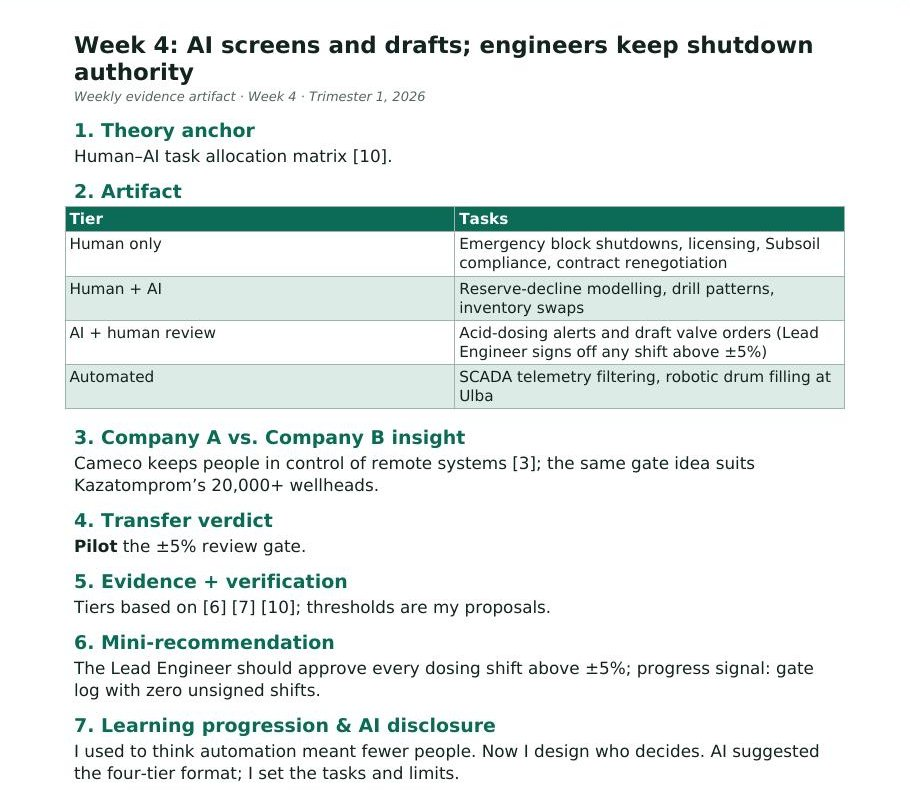

Week 4: AI screens and drafts; engineers keep shutdown authority
1. Theory anchor
Human–AI task allocation matrix [10].
2. Artifact

| Tier | Tasks |
|---|---|
| Human only | Emergency block shutdowns, licensing, Subsoil compliance, contract renegotiation |
| Human + AI | Reserve-decline modelling, drill patterns, inventory swaps |
| AI + human review | Acid-dosing alerts and draft valve orders (Lead Engineer signs off any shift above ±5%) |
| Automated | SCADA telemetry filtering, robotic drum filling at Ulba |
3. Company A vs. Company B insight
Cameco keeps people in control of remote systems [3]; the same gate idea suits Kazatomprom’s 20,000+ wellheads.
4. Transfer verdict
Pilot the ±5% review gate.
5. Evidence + verification
6. Mini-recommendation
The Lead Engineer should approve every dosing shift above ±5%; progress signal: gate log with zero unsigned shifts.
7. Learning progression & AI disclosure
I used to think automation meant fewer people. Now I design who decides. AI suggested the four-tier format; I set the tasks and limits.